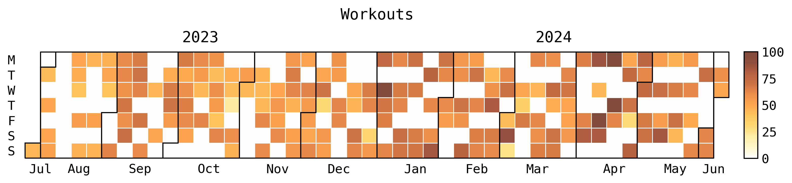

Gym Data Analysis
project timeline: 5th June - dunno
I want to gain more insight on my gym stats which I record using the Strong app. The strong app already provides some good graph visualisation, but its very simple and very specific. Also I figured this would be a good project to practice my data analysis skills with python. I might extend this project to also include my fitbit data.
I thought about doing this project in pyspark and sql. However, I figured I would be less likely to abandon, it if I just stuck to what I knew. So pandas, numpy, and seaborn it is.
Data gathering
The strong app does not have an api like fitbit does where I can regularly collect my information. Instead there is an option to manually extract your data in a csv format.
Data visualisation
Theres a lot of information you can extract from this csv file. Here's a couple things I want to obtain:
-
Do like one of those github yearly calander frequency charts.
-
Have a graph of how weekly gym frequency changes.
-
Obtain like the average weight I lift per set of 7/8 reps
Working out
1 Workout Heatmap
Aim: Create an annual heatmap for workouts
Objectives:
-
Read in data from csv, store as pandas df, print df to terminal.
-
Group rows by date and workout
-
Find a way to create a heatmap visual
-
Quantify heat signatures based on workout duration and also maybe workout volume.
The data from the csv has the form:
Date;Workout Name;Exercise Name;Set Order;Weight;Weight Unit;Reps;RPE;Distance;Distance Unit;Seconds;Notes;Workout Notes;Workout Duration
2023-07-30 16:49:28;"Arms";"Bench Press (Dumbbell)";1;14;kg;8;;;;0;"";"";44m
2023-07-30 16:49:28;"Arms";"Bench Press (Dumbbell)";2;12;kg;8;;;;0;;;44m
Where each row contains info on an individual set. (Could transform this csv into multiple sql tables? 🤔 )
We could group the rows in the csv by the date and workout name. Then use the duration for the workout to quantify the heat signature? (Could also use volume obtained by doing reps x weight [Weight Unit])
I filtered the raw data such that only date, workout name and workout duration was left. Then I dropped the duplicates to get a df containing all workouts when they were completed and how long it took.
Also when processing the data I had to apply parse_duration on the Workout Duration column. This was to convert from "xh ym" format to "60x + y" minutes float.
workout_df = raw_df[["Date", "Workout Name", "Workout Duration"]].drop_duplicates()
workout_df['Workout Duration'] = workout_df['Workout Duration'].apply(parse_duration)
I used the july python package to display the heatmap.

To instead use the workout volume as the heat signature, I would have to do some more preprocessing on the raw data.
Roadblocks
-
Issue:
Had issues reading csv using:
The error was due to the csv data using the delimiter ";" instead of the normal ","Date;Workout Name;Exercise Name;Set Order;Weight;Weight Unit;Reps;RPE;Distance;Distance Unit;Seconds;Notes;Workout Notes;Workout Duration 2023-07-30 16:49:28;"Arms";"Bench Press (Dumbbell)";1;14;kg;8;;;;0;"";"";44mSolution:
-
Issue:
After installing the july package, I got an error to do with matplotlib being depracated.
Solution:
As a result I downgraded matplotlib to
matplotlib==3.4.3instead of the latest versionmatplotlib 3.9.0.